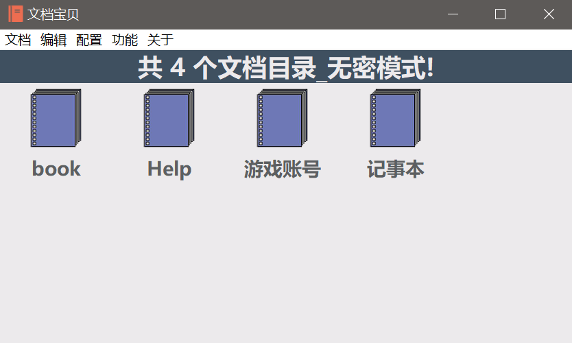
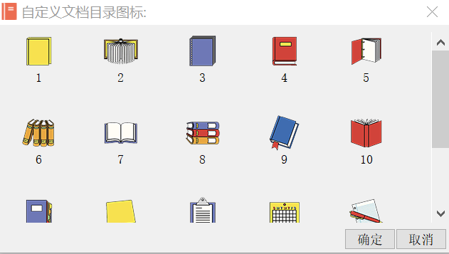
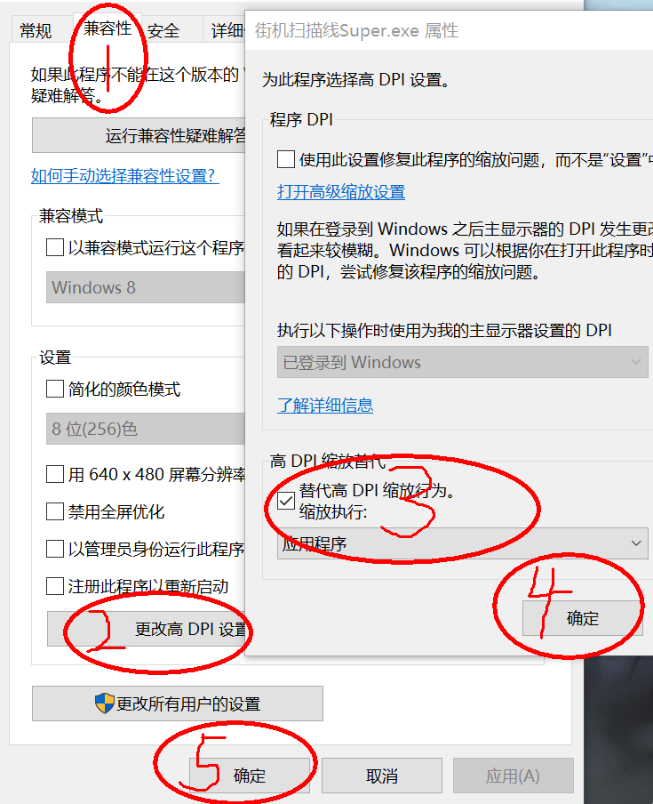

新动态：电玩街机[全新机台，对比旧版资源使用率更低，声音模拟更完善]已上线[浏览器跨平台游玩，支持电脑端、手机端、平板、电视盒子等平台设备...]支持自定义按键，支持手柄、键盘等外设输入！
站点公告：本站为非盈利性质个人站点，必然偶尔会发生无法访问的情况，介时还请多多理解，尽量第一时间恢复访问！
作者：感谢所有支持过本站的朋友们！愿天黑有灯，下雨有伞，平安幸福度一生！
无事阁原创软件_作者：不找事儿
★ 本站网址 ★ http://www.buzhaoshi.top/ ★ 或 ★ http://buzhaoshi.top/ ★
文档宝贝__(RC4双重加密)_为私密文档保驾护航
[文档宝贝]是一款记事为主的文档加密管理软件,使用RC4加密算法为文档二次加密,最大尺度保证数据的安全性.可选择性的使用[有密模式]或[无密模式],更有16款精美的目录图标供选择!程序的自由度很高,可以自由定制配色方案与字体方案!具体功能请参考本文下方的帮助文档
附件下载文档宝贝(20201024): docbaby20201024.rar
软件截图：

自定义图标界面:

这是[文档宝贝]首次运行时自动生成的帮助文档.
加密功能[RC4加密算法]可用作保护个人隐私数据或防止数据外漏!可使用Windows记事本来查看加密后的[.txt]文件的加密状态.
软件名称:文档宝贝(版本:正式版v2.2020.10.24)
目录与文件说明:
[文档宝贝.exe]为主程序.
[Start.ini]为程序配置文件.
[Default]文件夹为存放文档文件的主目录.
[Custom.db]为密码储存文件.
程序菜单说明:
[文档-新建文档目录:]
每新建一个文档目录即在Windows硬盘中生成一个与文档目录同名的文件夹,此文件夹用来存放文档文件,只能在文档目录进行操作.
[文档-返回文档目录:]
返回文档目录以选择不同的目录,只能在文档列表与内容编辑区操作,与编辑菜单中的[返回目录]功能一致.
[文档-新建文档文件:]
在内容编辑页面重新建立一份文档，只能在文档列表与内容编辑区操作,与编辑菜单中的[新建文档]功能一致.
[文档-返回文档列表:]
返回到文档列表页面,以选择不同的文档进行查看,与编辑菜单中的[返回列表]功能一致,只能在内容编辑区进行操作.
[文档-保存当前文档:]
将当前文档更新保存,无密模式即为无密保存,有密模式即为有密保存,只能在内容编辑区进行操作.
[文档-另存为无密文件:]
在有密模式下也可将文档导出为无密状态,只能在内容编辑区进行操作.
[文档-删除当前文档:]
删除掉当前正在阅读的文档,删除后自动返回文档列表,只能在内容编辑区进行操作.
[文档-批量删除操作:]
打开硬盘中文档所在根目录的文件夹,需自行手动操作.
[文档-退出:]
退出文档宝贝.
编辑菜单可在内容编辑区右键唤出!
[编辑-新建文档],[编辑-返回目录],[编辑-返回列表:]
这三个功能与[文档]菜单中的功能一致.
[编辑-撤销:]
将文档内容还原到未编辑前状态,前提是上一步有编辑操作.
[编辑-剪切:]
将选中文本剪切到系统剪贴板,剪切后当前选中内容为空.
[编辑-复制:]
将选中文本复制到系统剪贴板.
[编辑-粘贴:]
将当前系统剪贴板的内容粘贴到光标或选中文本处.
[编辑-查找替换:]
1.[查找:]单次搜寻并选中被搜寻文本.
2.[查找下一个:]单次搜寻并选中被搜寻文本,再次操作将搜寻当前被选中文本的下一个被搜寻文本.
3.[替换:]单次替换被搜寻出并选中的文本.
4.[全部替换:]替换整篇内容中被搜寻的文本,完成后返回内容文本首.
[编辑-全选:]
选中当前全部内容.
[编辑-取消全选:]
取消当前选中的全部内容.
[配置-默认配色方案1.2.3:]
重置为系统默认的配色方案,1.护眼.2.亮色.3.暗色.
[配置-自定义配色方案:]
允许用户自定义[文档宝贝]各个区域的颜色与文本颜色.
[配置-自定义字体方案:]
允许用户自定义[文档宝贝]各个区域的文本显示效果.
[配置-自定义文档目录图标:]
允许用户自定义文档目录的图标显示,共计16幅精美的图标供选择使用,只能在文档目录进行操作.
[功能-设置密码:]
软件起初是无密模式,顾名思义就是没有密码的模式,保存文件的后缀为txt格式,设置密码后,进入有密模式,之后每篇被保存的文档都将被加密,保存文件的后缀为rc[为方便管理，将加密后文件的后缀txt改为rc],启动[文档宝贝]时可有选择的进入[有密模式]或[无密模式],可依自身需要进行选择.在有密模式下不会列出未加密文档,同样在无密模式下不会列出已加密文档,可按需分类管理.[文档宝贝]在使用任何程序本身的加解密功能时,都将会使用当前设置的密码来实现对文件的加密与解密.
[功能-清除密码:]
清除掉先前设置的密码,将程序还原到无密模式,若要解密先前密码加密过的文件,只需在再次设置密码时将密码设置为与先前加密文件时所使用的密码一致即可,此方法适用于[文档宝贝]所有加解密功能.也就是说,设置密码后加密一个文件,清除密码，再次设置这个密码，就可以解密这个加密文件.[清除密码]功能只能在有密模式进行操作.
[功能-无密打包备份:]
将当前所有文档目录与文档目录包含的所有文档压缩打包成[zip]格式的压缩包并保存到程序根目录,文件名为Bak.zip
[功能-复原无密备份:]
在有备份文件Bak.zip并且此文件存在于根目录的前提下,将复原所有文档目录到Default文件夹中,有同名文件即覆盖.
[功能-有密打包备份:]
将当前所有文档目录与文档目录包含的所有文档压缩打包并加密成[rc]格式的压缩包保存到程序根目录,文件名为RC.bak
[功能-复原有密备份:]
在有备份文件RC.bak并且此文件存在于根目录的前提下,将复原所有文档目录到Default文件夹中,有同名文件即覆盖.只能在[有密模式]进行操作.
[附加功能-为其他文件加密:]
这个功能可以对任意程序或文件进行单个加密,加密时必须声明被加密文件的路径与加密后文件的保存路径.只能在[有密模式]进行操作.
[附加功能-为其他文件解密:]
这个功能可以解密先前使用[为其他文件加密]加密过的文件,进行单个解密,解密时必须声明加密文件的路径与解密后文件的保存路径.只能在[有密模式]进行操作.当然也可以使用这个功能去解密[文档宝贝]使用此密码加密保存过的文档,因为[文档宝贝]在使用任何程序本身的加解密功能时,都将会使用当前设置的密码来实现对文件的加密与解密,所以还请牢记密码为妙,文章底部会写出忘记密码后重置密码的方法.
[关于-软件主页:]
打开[文档宝贝]的网站主页.
[关于-帮助:]
将此篇帮助文档写到程序根目录的Default\Help\帮助文档.txt,可通过文档目录的[Help]目录中找到该帮助文档.
[关于-版本:]
查看[文档宝贝]程序的版本号与检测版本更新!
[关于忘记密码:]
如果是因为储存密码文件被误删或丢失,可以用Windows记事本打开[文档宝贝]程序跟目录的[Start.ini]文件,找到第六行的[Num1=1],将其改为[Num1=0]或直接删除[Start.ini]文件(直接删除此文件用户的所有自定义配置也将被重置为默认状态),重新运行[文档宝贝]后再次将密码设置为先前设置的密码即可,也可以设置成其他密码,但如果有被先前密码加密过的文档存在时,将无法为其解密.若情况是真正的忘记密码,即使重新设置新的密码,那先前密码加密过的文档将永远无法查看,除非你想起先前的密码再次进行设置,无论是使用相同密码或是更换不同密码为文档或文件加密,要想保证文件的可用性,还是牢记密码为妙!
[版权说明:]在不修改软件内容的前提下,可自由传播分享[文档宝贝].
[软件作者:]不找事儿
[作者邮箱:]xapdax@126.com
2020.10
注意(补充)：如果操作系统为windows10，建议将 "DPI缩放" 设置一下，这样可以避免因程序被缩放而造成文字不清晰的问题，设置方法可参考下图：

★ 本站网址 ★ http://www.buzhaoshi.top/ ★ 或 ★ http://buzhaoshi.top/ ★